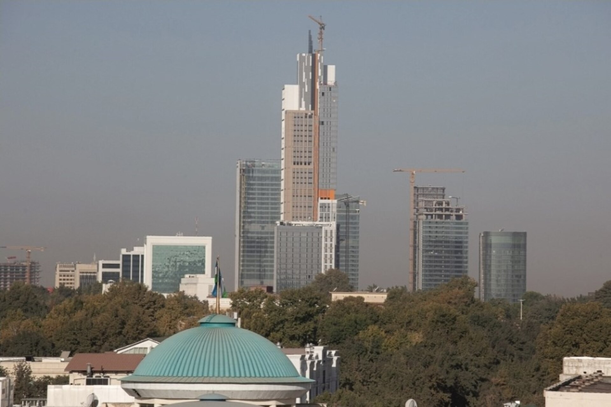

Inflyatsiya nima va nega narxlar oshadi: to‘liq ma’lumotnoma
Inflyatsiya — narxlarning umumiy va barqaror ko‘tarilishi, pulning xarid qobiliyati pasayishi. U qanday o‘lchanadi (iste’mol narxlari indeksi), qanday turlari va sabablari bor (talab, xarajat, pul massasi), nominal va real daromad farqi, markaziy bank uni qanday nazorat qiladi. Faktlarga asoslangan, manbali ma’lumotnoma; O‘zbekiston Markaziy banki va XVJ ma’lumotlari misolida.

Inflyatsiya — bu iqtisodda tovar va xizmatlar narxining umumiy va barqaror darajada ko‘tarilishi; buning natijasida bir birlik pulning xarid qobiliyati (ya’ni u bilan sotib olish mumkin bo‘lgan narsa hajmi) pasayadi. Quyida inflyatsiya nima ekani, qanday o‘lchanishi, sabablari, nominal va real daromad farqi, markaziy bank uni qanday nazorat qilishi va O‘zbekistondagi joriy holat — nufuzli iqtisodiy manbalar asosida, faktlar bilan bayon etiladi.
Inflyatsiya nima
Inflyatsiya bitta tovarning qimmatlashishi emas, balki narxlarning umumiy darajasi vaqt o‘tishi bilan barqaror ko‘tarilishidir. Masalan, agar yillik inflyatsiya 10 foiz bo‘lsa, o‘rtacha hisobda bir yil oldin 100 000 so‘m bo‘lgan savat endi 110 000 so‘m turadi — ayni pul bilan kamroq narsa olinadi. Inflyatsiyaning teskarisi — deflyatsiya (narxlarning umumiy pasayishi); inflyatsiya sur’atining sekinlashuvi esa dezinflyatsiya deyiladi (narxlar hamon oshadi, lekin sekinroq).
Qanday o‘lchanadi: iste’mol narxlari indeksi (CPI)
Inflyatsiya ko‘pincha iste’mol narxlari indeksi (Consumer Price Index, CPI) orqali o‘lchanadi. Statistika idorasi uy xo‘jaliklari muntazam sotib oladigan tovar va xizmatlardan iborat “savat” (oziq-ovqat, kommunal to‘lovlar, transport, kiyim, dori-darmon va boshqalar) tuzadi va shu savat narxining o‘zgarishini kuzatadi. Yillik inflyatsiya — savatning bugungi narxi bir yil oldingiga nisbatan necha foiz oshgani. “Bazaviy (core) inflyatsiya” esa narxi keskin tebranadigan oziq-ovqat va energiyani chiqarib tashlab hisoblanadi — u bosimning barqaror qismini ko‘rsatadi.
Sabablari: talab, xarajat va pul massasi
Iqtisodchilar inflyatsiyaning bir necha manbasini ajratadi. Talab tomonlama (demand-pull) inflyatsiya — talab taklifdan oshib ketganda, ya’ni odamlarda pul ko‘p, tovar esa yetarli emas. Xarajat tomonlama (cost-push) inflyatsiya — ishlab chiqarish xarajatlari (xomashyo, energiya, ish haqi, import narxi) oshib, sotuvchilar buni narxga qo‘shganda. Monetar sabab — pul massasi iqtisodiy o‘sishdan tezroq ko‘payishi (“ortiqcha pul kamroq tovarni quvlaydi”). Kutilma ham rol o‘ynaydi: narx oshadi deb kutilsa, ish haqi va narxlar oldindan ko‘tarilib, inflyatsiya o‘zini o‘zi qo‘llab-quvvatlashi mumkin.
Nominal va real: daromadning haqiqiy qiymati
Nominal miqdor — pulda ifodalangan raqam; real miqdor — inflyatsiyani hisobga olgan, ya’ni xarid qobiliyati bo‘yicha o‘lchangan qiymat. Agar ish haqingiz yiliga 8 foizga oshsa, lekin inflyatsiya 10 foiz bo‘lsa, real daromadingiz taxminan 2 foizga kamaygan bo‘ladi — ko‘proq pul olsangiz-da, u bilan kamroq narsa olasiz. Shuning uchun jamg‘arma, maosh yoki kredit foizini baholashda faqat nominal raqamga emas, real (inflyatsiyadan yuqori yoki past) foizga qarash kerak.
Nega bu diaspora va oila uchun muhim
Inflyatsiya jamg‘armani, maoshni va pul o‘tkazmalarini bevosita ta’sirlaydi. Yostiq ostida yoki foizsiz saqlangan pul inflyatsiya tufayli har yili qadrsizlanadi. Chet eldan yuborilgan pul o‘tkazmalari (remittances) yetib borgunga qadar mahalliy narxlar oshsa, ularning real qiymati kamayadi. Yuqori inflyatsiya kredit va ipoteka foizlarini ham oshiradi. Shuning uchun oilaviy byudjet, jamg‘arma va investitsiya rejalarida inflyatsiyani hisobga olish muhim.
Markaziy bank inflyatsiyani qanday nazorat qiladi
Inflyatsiyani jilovlashning asosiy vositasi — markaziy bankning asosiy (siyosat) foiz stavkasi. Bank stavkani oshirsa, kredit qimmatlashadi, xarajat va talab kamayadi — bu narx bosimini pasaytiradi. Stavka pasaytirilsa, aksincha, iqtisodiyot rag‘batlantiriladi. Ko‘pgina markaziy banklar aniq “inflyatsiya maqsadi” (masalan, 4–5 foiz) e’lon qilib, shu darajaga intiladi; barqaror, past va oldindan aytsa bo‘ladigan inflyatsiya iqtisodiy rejalashtirishni osonlashtiradi.
O‘zbekistonda: joriy holat
O‘zbekiston Markaziy banki inflyatsiya maqsadi sifatida 5 foizni belgilagan. 2026-yil davomida yillik inflyatsiya bu maqsaddan yuqori bo‘lib turdi: yil o‘rtasida taxminan 6,4 foiz, sentabr oyida qariyb 6,2 foiz atrofida bo‘lgan; Markaziy bank yil oxiriga taxminan 6,5 foizni bashorat qilgan. Bank asosiy stavkani 2026-yil davomida 14 foiz darajasida saqlab kelmoqda va inflyatsiya barqaror pasaymaguncha qat’iy pul-kredit siyosatini davom ettirishni bildirgan. Xalqaro valyuta jamg‘armasi (XVJ) baholashiga ko‘ra, 5 foizli maqsadga 2027-yilda erishilishi kutilmoqda.
Giperinflyatsiya
Nazoratdan chiqqan, oyiga o‘nlab yoki yuzlab foizga yetadigan inflyatsiya giperinflyatsiya deyiladi. Tarixiy misollar: 1920-yillardagi Veymar Germaniyasi, 2000-yillar oxiridagi Zimbabve. Bunda pul deyarli bir kechada qadrsizlanadi, aholi jamg‘armasidan ayriladi va milliy valyutaga ishonch yo‘qoladi. O‘zbekiston ham 1990-yillar boshida, mustaqillikdan keyingi o‘tish davrida juda yuqori inflyatsiyani boshdan kechirgan edi.
Eslatma
Bu maqola umumiy iqtisodiy ma’lumot beradi va moliyaviy maslahat emas. Keltirilgan O‘zbekiston raqamlari 2026-yil holatiga tegishli va vaqt o‘tishi bilan o‘zgaradi; eng so‘nggi ko‘rsatkichlar uchun Markaziy bank va statistika idorasining rasmiy ma’lumotlariga qarash tavsiya etiladi. Manbalar: O‘zbekiston Markaziy banki, Xalqaro valyuta jamg‘armasi (XVJ), Jahon banki, Trend.az, UzDaily.
Manbalar
- O‘zbekiston Markaziy banki — asosiy stavka 14% da saqlandi; inflyatsiya maqsadi 5% (2026 press-relizlari)
- IMF — Uzbekistan: 2026 Article IV Mission concluding statement (inflyatsiya prognozi, 5% maqsad 2027-yilda)
- Trend.az — Uzbek experts see inflation nearing Central Bank's 5% target
- UzDaily — Uzbekistan Central Bank to keep tight policy until inflation reaches 5%
- Interfax — Uzbekistan's Central Bank holds key rate at 14%